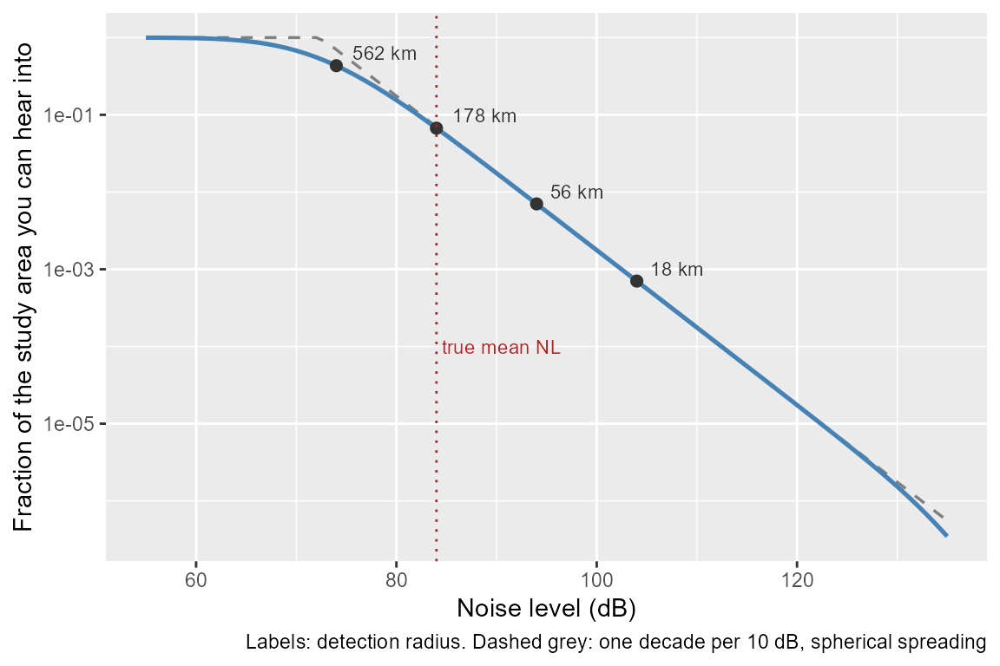
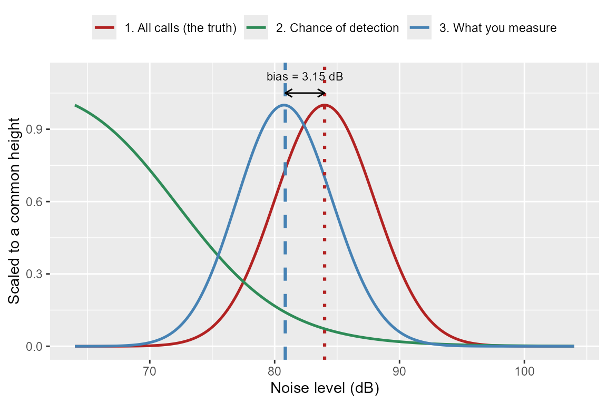
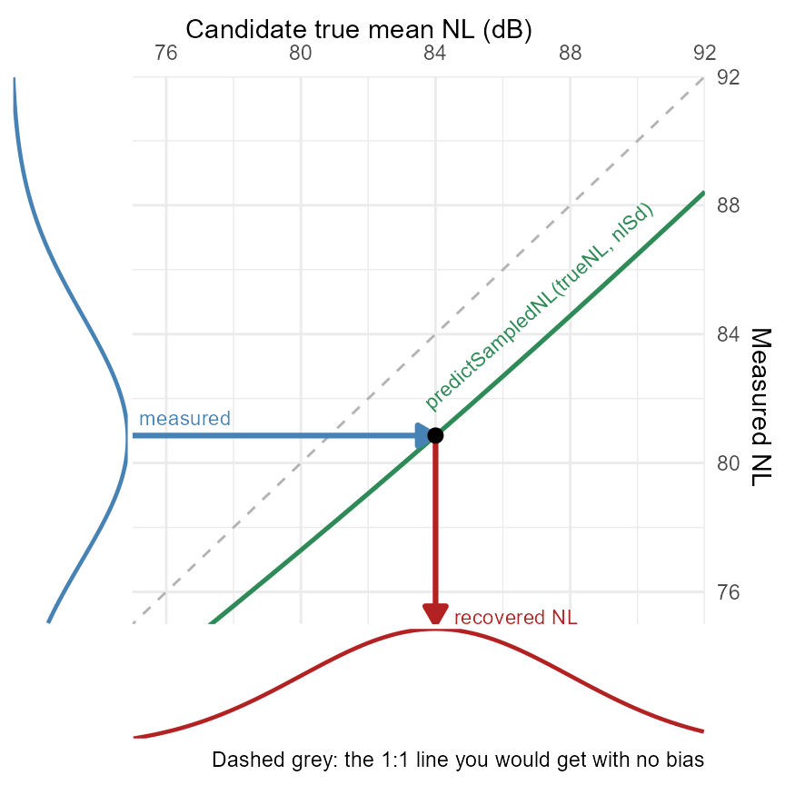
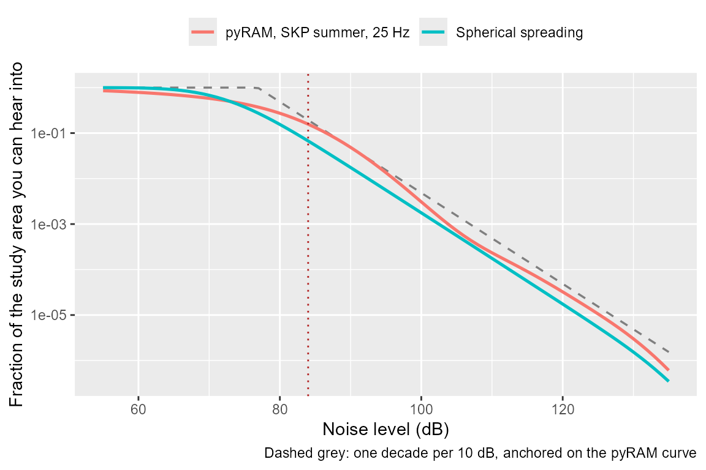
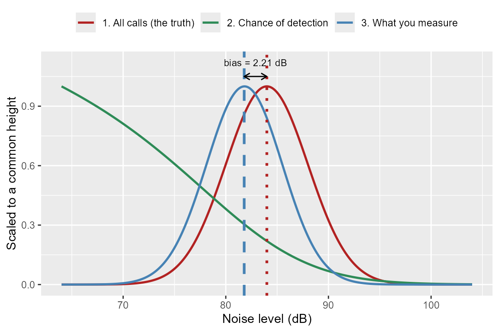
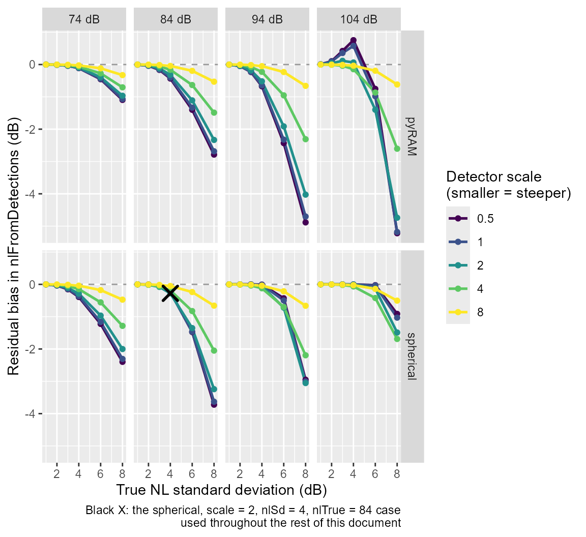
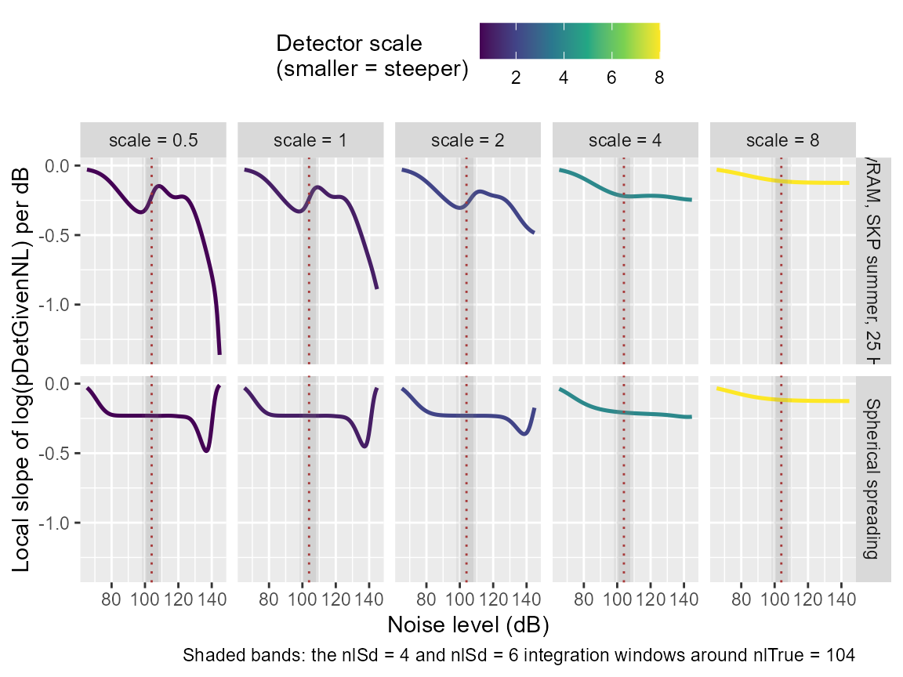
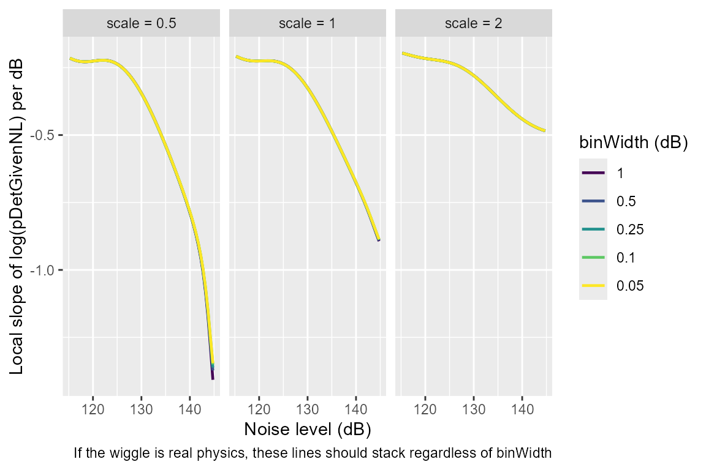
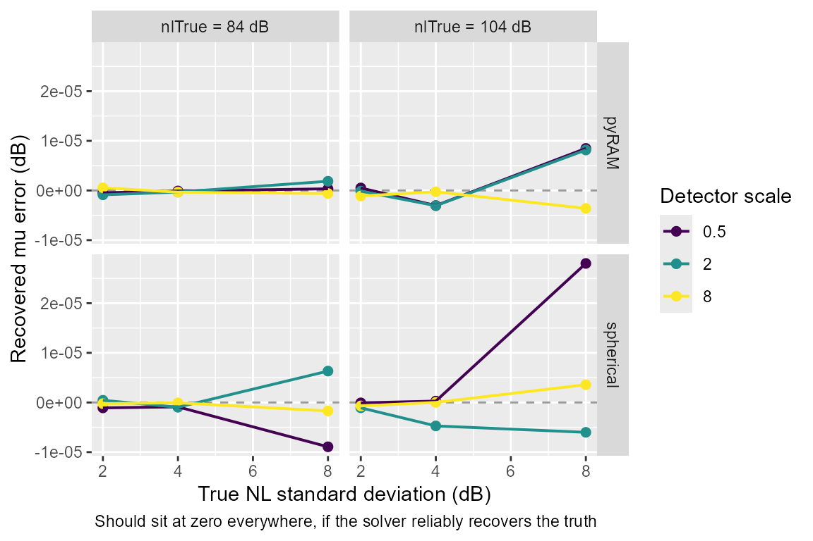

callDensity: Estimating noise levels from detections
Source:vignettes/callDensity_noiseLevels.Rmd
callDensity_noiseLevels.Rmd
library(callDensity)
library(ggplot2)
library(kableExtra)
library(future)
library(future.apply)
library(ggside)
#> Warning: package 'ggside' was built under R version 4.5.3The problem in one paragraph
For single sensor call density estimates, we rely on a Monte Carlo
simulation to estimate the probability of detection in the area. This
simulation, pDetInArea, requires a distribution of noise
levels, NL, as an input parameter. An obvious place to get such a
distribution is from the NL that are associated with each detection
(i.e. NL used in the denominator to estimate SNR when fitting a
detection function). However, those measurements are biased low. A quiet
period gives you a high SNR, and a high SNR gives you a detection, so
your detections oversample the quiet periods. Measure noise only where
you detected something and you will conclude the ocean is quieter than
it is.
This vignette shows how big that bias is, where it comes from, and
how to correct for it. In Beyond Counting Calls (Castro et al. 2024), the mean and standard
deviation of noise levels, NL, were estimated directly from detections,
with no correction – a reasonable thing to do at the time without
suspecting a correction was required. By the Common Ground manuscript
(Miller et al. 2026), the need for a
correction had emerged, and nlFromSnrInfo was the result,
but it corrects using a property of the detector only, and did not
account for the geometry that also drives the bias, so it was never a
general solution (see “Where this leaves the old function” below for
more on why). This vignette proposes and investigates methods to correct
the bias that arises from reusing the NL measured while fitting the
detection function as the NL distribution pDetInArea’s
Monte Carlo simulation draws from.
From an average to a curve
pDetInArea , which is used by cde for call
density estimation, already computes something close to what we need to
correct the bias in the distribution of NL from detected calls. This
function answers one question: what fraction of the calls in the study
area get detected averaged over a whole distribution of noise levels and
source levels? That fraction is
,
a single number, and pDetInArea gets it by Monte Carlo
simulation: drawing NL and source levels, SL, from a normal distribution
and averaging the detection probability over the draws.
We can change one thing about that calculation: instead of drawing NL
and SL from a distribution, hold it fixed at one value. The output is no
longer a single averaged number, it is the detection probability at
that noise level. Do this at 70 dB, then 74, then 78, and so on,
and the outputs trace out a curve: probability of detection against
noise level. Call it pDetGivenNL.
This curve is the key to the whole solution. pDetInArea
already knows how to compute detection probability from a distribution
of noise levels, it just averages the answer into a single number,
.
Hold the noise level fixed instead of drawing it from a distribution,
and the same calculation returns detection probability at that one noise
level – exactly the quantity that determines how strongly detections
favour quiet periods over loud ones, since a quiet spell means more of
the study area is audible and a loud spell means less.
pDetGivenNL isn’t new machinery bolted onto
pDetInArea, it’s the same machinery run one noise level at
a time instead of averaged. What the rest of this vignette does with it
is quantify the bias described in the opening paragraph, and then
correct for it.
Building a simplified detection range curve
pDetGivenNL takes the same transmission loss table and
source level distribution as pDetInArea and
cde, plus a vector of noise levels to evaluate at instead
of a distribution to draw from.
The simple spherical spreading transmission loss table and source levels below are used throughout the rest of the vignette, though we later demonstrate that the solution works for more realistic numerical models of TL from more realistic environments as well. The detector is simulated as a plain logistic, so, this section does not depend on any other external datasets.
R <- 1e6
SL <- data.frame(mean = 190, sd = 4, sampleSize = 350)
TL <- simTLradials_20logR(maxRange = R, rangeStep = 1000, numTransects = 4)
TL <- TL[is.finite(rowSums(TL)) & TL[, 1] > 0, ] # drop r = 0 if present
detector <- function(snr) plogis(snr, location = 1, scale = 2)
nlGrid <- seq(from = 55, to = 135, by = 1)
pCurve <- pDetGivenNL(nlGrid, detector, SL, TL)
curveDf <- data.frame(nl = nlGrid, pDet = pCurve)Noise level versus audible area (AKA detection range)
In this section we create a plot to illustrate how
pDetGivenNL works. Before looking at the plot it is
important to understand that noise levels on this plot are all
hypothetical rather than actual measurements. Every point along the line
asks for the given SL and detection function, if the noise were
always exactly this loud, and never varied, what fraction of the study
area would yield detections?
That fraction is just detection area divided by study area. So this plot is really about detection range, which is a more familiar quantity anyway. Adding these ranges at a few points along the curve provides references that aid interpretation for those who think more naturally about detection range rather than about .
# Range at which a call of mean source level sits at the detector's 50% point.
# Approximate. Ignores the spread in SL and the smoothness of the detector, so
# it is a label, not a calculation the curve depends on.
detRadius_km <- function(nl, SLmean = 190, loc = 1) {
10^((SLmean - nl - loc) / 20) / 1000
}
marks <- data.frame(nl = c(74, 84, 94, 104))
marks$pDet <- pDetGivenNL(marks$nl, detector, SL, TL)
marks$label <- sprintf("%.0f km", detRadius_km(marks$nl))
# Reference line: one decade per 10 dB, anchored at 90 dB. This slope is a
# direct consequence of spherical spreading (TL = 20 log10(r)) plus a
# step-function detector: to hold SNR constant, range must shrink by
# 10^(dNL/20) for each dB of extra noise, so area -- and therefore detection
# probability -- shrinks by 10^(dNL/10). It is tied to this TL model
# specifically, which is exactly why it is used as a reference line rather
# than the curve itself, and why the comparison against pyRAM later in this
# vignette anchors to the same line. It is a bare exponential with no ceiling,
# so it is clamped at 1 -- probability cannot exceed that, even if the formula
# it comes from does not know that.
anchor <- pDetGivenNL(90, detector, SL, TL)
refDf <- data.frame(nl = nlGrid,
pDet = pmin(anchor * 10^(-(nlGrid - 90) / 10), 1))
ggplot(curveDf, aes(x = nl, y = pDet)) +
geom_line(data = refDf, linetype = "dashed", colour = "grey50",
linewidth = 0.6) +
geom_line(linewidth = 0.9, colour = "steelblue") +
geom_point(data = marks, size = 2, colour = "grey20") +
geom_text(data = marks, aes(label = label), hjust = -0.25, vjust = -0.4,
size = 3, colour = "grey20") +
geom_vline(xintercept = 84, colour = "firebrick", linetype = "dotted") +
annotate("text", x = 84.5, y = 1e-4, label = "true mean NL",
colour = "firebrick", hjust = 0, size = 3) +
scale_y_log10() +
xlab("Noise level (dB)") +
ylab("Fraction of the study area you can hear into") +
labs(caption = "Labels: detection radius. Dashed grey: one decade per 10 dB, spherical spreading")
Working through two of those labelled points by hand helps the plot stop being abstract.
At 84 dB. A 190 dB call reaches the detector’s 50% point when SNR is 1 dB, so when TL is dB. Under spherical spreading that is metres, or 178 km. So you are hearing calls out to roughly 178 km. The area you can hear into is km². The study area is km². You are hearing into about 3% of it.
At 94 dB. Every call now needs 10 dB more received level. Ten decibels of spherical spreading is a factor of 3.16 in range. So 178 km becomes 56 km. The area is km², one tenth of what it was. You are hearing into 0.3% of the study area.
Ten decibels louder, ten times less ocean, ten times fewer calls. Each 10 dB step to the right divides the curve by 10. On a log axis that is a straight line, and that is all the dashed reference line is saying.
The shoulder on the left. Below about 69 dB the
labelled radius would exceed 1000 km. For simple spherical spreading,
this is past the edge of the study area. In this regime, the curve
flattens to 1 and making the sea quieter yields no additional detections
in the defined study area. That shoulder is exactly where the
tidy algebra stops working, and it is one of the reasons why the
function pDetGivenNL numerically computes a curve rather
than simply fitting a slope to it.
Illustrating why NL from detected calls is biased
How the detection range curve relates to true NL and measured NL. So far everything mentioned about the NL in the above plot has been abstract and hypothetical. Now it is time to make it more realistic. Let the red line mark the true mean noise level, out on the variable portion where a decibel of noise really does decrease detections.
The same curve is now plotted on a linear axis below, zoomed into the range the noise actually occupies, and it better illustrates the solution.
Now use the curve: nature draws a noise level for each call from a normal distribution. The detection process then throws most of them away, and it throws away loud ones far more eagerly than quiet ones. The curves below illustrate exactly how much more eagerly.
nlTrue <- 84
nlSd <- 4
fine <- seq(nlTrue - 5 * nlSd, nlTrue + 5 * nlSd, length.out = 400)
fN <- dnorm(fine, nlTrue, nlSd)
pd <- pDetGivenNL(fine, detector, SL, TL)
wt <- fN * pd
# Scale each curve to a common height so the shift is visible
filterDf <- rbind(
data.frame(nl = fine, y = fN / max(fN), what = "1. All calls (the truth)"),
data.frame(nl = fine, y = pd / max(pd), what = "2. Chance of detection"),
data.frame(nl = fine, y = wt / max(wt), what = "3. What you measure")
)
meanObs <- sum(fine * wt) / sum(wt)
ggplot(filterDf, aes(x = nl, y = y, colour = what)) +
geom_line(linewidth = 0.9) +
scale_colour_manual(values = c("1. All calls (the truth)" = "firebrick",
"2. Chance of detection" = "seagreen",
"3. What you measure" = "steelblue")) +
geom_vline(xintercept = nlTrue, colour = "firebrick", linetype = "dotted",
linewidth = 1.1) +
geom_vline(xintercept = meanObs, colour = "steelblue", linetype = "dashed",
linewidth = 1.1) +
annotate("segment", x = meanObs, xend = nlTrue, y = 1.05, yend = 1.05,
arrow = arrow(length = unit(2, "mm"), ends = "both")) +
annotate("text", x = (meanObs + nlTrue) / 2, y = 1.12,
label = sprintf("bias = %.2f dB", nlTrue - meanObs), size = 3) +
xlab("Noise level (dB)") +
ylab("Scaled to a common height") +
labs(colour = NULL) +
theme(legend.position = "top")
The red curve is the truth. The green curve is the detection curve from the previous plot, now drawn on a linear axis over the range the noise actually occupies. The blue curve is the red curve multiplied by the green curve, and it is also the NL that would be measured from the detections used to fit the detection function.
Multiplying the true value by a curve that leans left drags the peak left.
However, there are two additional things worth noticing, because both get used later.
The blue curve is narrower than the red curve by very little. The width survives the filtering almost intact, which means the standard deviation of your measured noise is near the true value even though the mean is not. If we assume that the measured standard deviation is close enough to the truth to use it as is, then that leaves only one unknown to solve for: the size of the leftward shift (i.e. the bias in the mean).
The size of the shift depends on how steeply the detection function declines, and on how wide the true noise distribution is.
Correcting the bias
The previous plot is a prediction machine. Give it a candidate true
mean, and it tells you what mean you should have measured. That machine
is predictSampledNL, shown here in seagreen – the same
function used throughout this vignette, now swept across a range of
candidate true means instead of evaluated once.
We already know what we measured, and we have already estimated the
detection function (because it is required by pDetInArea),
so we can run this prediction machine backwards.
library(ggside)
muTry <- seq(75, 92, by = 1)
muObs <- vapply(muTry, function(m)
predictSampledNL(mu = m, sigma = nlSd, detFun = detector, SL = SL, TL = TL),
numeric(1))
rootDf <- data.frame(muTrue = muTry, muMeasured = muObs)
# The lookup itself: read across from the known measured value (y-axis) to
# the curve, then down to the candidate true mean that produced it. uniroot
# does this numerically; the arrows below do it visually, landing exactly on
# uniroot's own answer rather than on a separately-marked "true" position.
recovered <- uniroot(
function(mu) predictSampledNL(mu = mu, sigma = nlSd, detFun = detector,
SL = SL, TL = TL) - meanObs,
interval = c(meanObs, meanObs + 25))$root
xFloor <- min(muTry)
yFloor <- xFloor
xCeil <- 92
# curve 1 and curve 3: reuse fine/fN/wt directly from the filter.plot chunk,
# scaled to a common height the same way that plot already does (divide by
# each curve's own max), rather than recomputing anything fresh here.
keepRange <- fine >= xFloor & fine <= xCeil
trueDensDf <- data.frame(x = fine[keepRange], dens = fN[keepRange] / max(fN))
measDensDf <- data.frame(y = fine[keepRange], dens = wt[keepRange] / max(wt))
ggplot(rootDf, aes(x = muTrue, y = muMeasured)) +
geom_abline(slope = 1, intercept = 0, colour = "grey70", linetype = "dashed") +
geom_line(linewidth = 0.9, colour = "seagreen") +
# Step 1: across, from what you measured to the point on the curve
annotate("segment", x = xFloor, xend = recovered, y = meanObs, yend = meanObs,
colour = "steelblue", linewidth = 1.1,
arrow = arrow(length = unit(3, "mm"), type = "closed")) +
# Step 2: down, from that point to the candidate true mean it came from
annotate("segment", x = recovered, xend = recovered, y = meanObs, yend = yFloor,
colour = "firebrick", linewidth = 1.1,
arrow = arrow(length = unit(3, "mm"), type = "closed")) +
annotate("point", x = recovered, y = meanObs, size = 2.5, colour = "black") +
annotate("text", x = xFloor + 0.2, y = meanObs, hjust = 0, vjust = -0.7,
size = 3, colour = "steelblue", label = "measured") +
annotate("text", x = recovered, y = yFloor, hjust = -0.15, vjust = 0,
size = 3, colour = "firebrick", label = "recovered NL") +
annotate("text", x = max(rootDf$muTrue) - 1,
y = rootDf$muMeasured[which.max(rootDf$muTrue)] + 0.2,
hjust = 1.1, size = 3, angle=42, colour = "seagreen",
label = "predictSampledNL(trueNL, nlSd)") +
geom_xsideline(data = trueDensDf, aes(x = x, y = dens), inherit.aes = FALSE,
colour = "firebrick", linewidth = 0.8) +
geom_ysideline(data = measDensDf, aes(x = dens, y = y), inherit.aes = FALSE,
colour = "steelblue", linewidth = 0.8) +
ggside(y.pos = "left", x.pos="bottom") +
coord_fixed(ratio=1, xlim = c(xFloor, xCeil), ylim = c(xFloor, xCeil), expand=FALSE) +
scale_x_continuous(position='top')+
scale_y_continuous(position='right')+
xlab("Candidate true mean NL (dB)") +
ylab("Measured NL") +
labs(caption = "Dashed grey: the 1:1 line you would get with no bias") +
theme_minimal() +
theme(ggside.panel.scale = 0.2) +
theme_ggside_void()
The green line sits below the 1:1 line by the size of the bias. It
rises steadily, so there is exactly one candidate that reproduces your
measurement. The two arrows are the lookup, drawn: across from what you
measured (blue) to the point on the curve, then down (red) to read off
the candidate that produced it. That point and that landing spot are not
illustrative approximations – they are uniroot’s own
answer, plotted.
nlFromDetections is the package function that does
exactly this (uniroot over predictSampledNL,
same shape as above). It also defaults to reading noise measurements
from a NoiseRL column, so it accepts an
snrInfo table without modification:
nlFromDetections(snrInfo = data.frame(NoiseRL = rnorm(500, meanObs, nlSd)),
snrDetFun = detector, SL = SL, TL = TL)
#> mean sd sampleSize
#> 1 84.34613 4.127546 500That’s a synthetic snrInfo built from the biased mean
this vignette already computed, just to show the call shape.
mean should land close to nlTrue (84 dB);
sd is passed through from the input essentially unchanged,
per the note two paragraphs up about curve 3’s width.
Where this leaves the old function (pre callDensity v1.1.1)
Prior to callDensity version 1.1.1, nlFromSnrInfo was
used to correct this bias by adding the SNR at which the detection
function reaches 0.5. nlFromSnrInfo was always a stopgap.
It corrects the bias using measured NL and a property of the detector
(the SNR at its 50% point). This derived from the example scenario,
where it arrived at the correct answer coincidentally,
not because it was the thing driving the bias.
nlFromDetections is derived from the measured NL,
detector, and geometry that actually produces the bias, and is
consistently less biased across every detector and site this has been
tested against. nlFromSnrInfo is retained as a deprecated
wrapper for old scripts, but there is no situation where it should be
preferred over nlFromDetections. cde already
defaults to nlFromDetections when NL is not
supplied.
Solution built from a lookup table, not a formula
pDetGivenNL was never built around spherical spreading,
or any other propagation formula. It reads transmission loss straight
out of whatever table you hand it, and evaluates the sonar equation
against that table, cell by cell. Swap the spherical spreading table for
a more realistic model (e.g. pyRAM output, AcTUP output, anything else
with the same range and TL columns), and the function does not need to
change, because it never encoded an assumption about what the physics
look like in the first place. The dashed reference line on the first
plot is not part of that machinery: it is one candidate formula
(),
included there as a comparison so any departure from it is visible, not
as anything pDetGivenNL relies on.
Spherical spreading is not a serious model for a baleen whale call at
25 Hz in 2000 m of water at 62°S. So below we use a real one to
demonstrate that nlFromDetections is TL-model agnostic. The
file below is pyRAM output computed on GLORYS12 sound speed profiles
along 24 radial transects out to 1000 km, for the South Kerguelen
Plateau mooring in summer, at 25 Hz.
First, look at the data
dim(kerguelen2015TL)
#> [1] 10000 25
names(kerguelen2015TL)
#> [1] "range_m" "tl000" "tl015" "tl030" "tl045" "tl060" "tl075"
#> [8] "tl090" "tl105" "tl120" "tl135" "tl150" "tl165" "tl180"
#> [15] "tl195" "tl210" "tl225" "tl240" "tl255" "tl270" "tl285"
#> [22] "tl300" "tl315" "tl330" "tl345"
range(kerguelen2015TL$range_m)
#> [1] 100 1000000
kerguelen2015TLmeta[, c("azimuths", "TruncationDistance_m")]
#> azimuths TruncationDistance_m
#> 1 0 1000000
#> 2 15 1000000
#> 3 30 1000000
#> 4 45 1000000
#> 5 60 1000000
#> 6 75 1000000
#> 7 90 1000000
#> 8 105 1000000
#> 9 120 740000
#> 10 135 710000
#> 11 150 480000
#> 12 165 460000
#> 13 180 410000
#> 14 195 810000
#> 15 210 850000
#> 16 225 950000
#> 17 240 1000000
#> 18 255 1000000
#> 19 270 1000000
#> 20 285 1000000
#> 21 300 1000000
#> 22 315 1000000
#> 23 330 1000000
#> 24 345 1000000kerguelen2015TL and kerguelen2015TLmeta are
TL data that ship with the callDensity package
(?kerguelen2015TL, ?kerguelen2015TLmeta).
kerguelen2015TLmeta records where each of the 24 transects
actually runs onto land, using the pyRAM pipeline’s bathymetry source
(cmems_mod_glo_phy_my_0.083deg_static).
The layout is already what pDetGivenNL wants:
range_m first, then 24 columns named by bearing from
tl000 to tl345. Range runs 100 m to 1000 km in
100 m steps, so 10,000 rows.
# Drop any non-finite cells. Range is already in metres and starts above zero.
TLpyram <- kerguelen2015TL[is.finite(rowSums(kerguelen2015TL)), ]
sprintf("%d transects, range step %.0f m, TL at 1000 km: %.1f to %.1f dB",
ncol(TLpyram) - 1,
diff(TLpyram$range_m)[1],
min(as.numeric(TLpyram[nrow(TLpyram), -1])),
max(as.numeric(TLpyram[nrow(TLpyram), -1])))
#> [1] "24 transects, range step 100 m, TL at 1000 km: 105.4 to 248.5 dB"
# Match truncation distances to transects by azimuth, not by row position --
# two objects agreeing on row order is an assumption, not a guarantee, and
# this is exactly the kind of silent misalignment that would be invisible in
# the output. tl015 gets the metadata row where azimuths == 15, full stop.
transectNames <- names(TLpyram)[-1] # tl000 .. tl345
transectAz <- as.numeric(sub("^tl", "", transectNames))
pyramTrunc <- kerguelen2015TLmeta$TruncationDistance_m[
match(transectAz, kerguelen2015TLmeta$azimuths)]
stopifnot("Every transect column must have a matching azimuth in kerguelen2015TLmeta" =
!anyNA(pyramTrunc))
truncated <- pyramTrunc < max(TLpyram$range_m)
sprintf("%d of %d transects hit land before %.0f km: %s km (bearings %s)",
sum(truncated), length(pyramTrunc), max(TLpyram$range_m) / 1000,
paste(round(pyramTrunc[truncated] / 1000), collapse = ", "),
paste(transectAz[truncated], collapse = ", "))
#> [1] "8 of 24 transects hit land before 1000 km: 740, 710, 480, 460, 410, 810, 850, 950 km (bearings 120, 135, 150, 165, 180, 195, 210, 225)"The spread in TL is very large, but that is because it is computed
from every bearing’s row at 1000 km regardless of whether that bearing
is still in water there. Eight of the 24 bearings hit land between 410
and 950 km (bearings 120° to 225°, roughly south through the plateau),
so their rows beyond that point describe whatever pyRAM did past the
coastline, not propagation through open water.
TLpyram[nrow(TLpyram), -1] mixes those in with the sixteen
genuinely open-water bearings. It is a fair description of what the raw
file contains, and not yet a fair description of the site. For this
reason, pDetGivenNL and pDetInArea can take a truncationDistance as an
input, and this can be used to mask (i.e. remove) land from the study
area when estimating NL and p_a.
The audible-area curve, spherical spreading vs realistic TL
pPyram <- pDetGivenNL(nlGrid, detector, SL, TLpyram,
truncationDistance = pyramTrunc)
bothDf <- rbind(
data.frame(nl = nlGrid, pDet = pCurve, what = "Spherical spreading"),
data.frame(nl = nlGrid, pDet = pPyram, what = "pyRAM, SKP summer, 25 Hz")
)
anchorP <- pDetGivenNL(90, detector, SL, TLpyram, truncationDistance = pyramTrunc)
refBoth <- data.frame(nl = nlGrid,
pDet = pmin(anchorP * 10^(-(nlGrid - 90) / 10), 1))
ggplot(bothDf, aes(x = nl, y = pDet, colour = what)) +
geom_line(data = refBoth, aes(x = nl, y = pDet), inherit.aes = FALSE,
linetype = "dashed", colour = "grey50", linewidth = 0.6) +
geom_line(linewidth = 0.9) +
geom_vline(xintercept = 84, colour = "firebrick", linetype = "dotted") +
scale_y_log10() +
xlab("Noise level (dB)") +
ylab("Fraction of the study area you can hear into") +
labs(colour = NULL,
caption = "Dashed grey: one decade per 10 dB, anchored on the pyRAM curve") +
theme(legend.position = "top")
truncationDistance = pyramTrunc changes what “the study
area” on the y-axis means. Without it, the denominator is the full 1000
km circle, including the land eight of these bearings never reach. With
it, the denominator is the actual water area cde() would
use, via the same td^2-per-sector logic
studyArea() applies. This curve is now the one that matches
what p_a inside cde() actually estimates for
this site, not a hypothetical circle.
What to look for, and what it means.
The slope should not be one decade per 10 dB. At 25 Hz in 2000 m of water the sound is in a waveguide, not a free field. Beyond a few water depths it spreads more like a cylinder than a sphere, which makes TL climb more slowly with range. Slower TL means a decibel of extra noise costs you a wider annulus, so the curve should fall faster than the dashed line, not slower.
The curve should be bumpy. Convergence zones and bottom interaction add and remove audible ocean at particular ranges. Wiggles are physics, not noise.
The shoulder should be further left, or gone. Flatter TL means longer detection range, so it takes a quieter sea to run out of study area.
One thing worth checking before trusting the output:
pDetGivenNL’s only approximation is the TL bin width, and a
bumpy curve is exactly the case where too coarse a bin could blur real
structure away rather than just smooth noise.
binCheck <- data.frame(binWidth = c(1, 0.5, 0.25, 0.1))
binCheck$pDet84 <- vapply(binCheck$binWidth, function(b)
pDetGivenNL(84, detector, SL, TLpyram, truncationDistance = pyramTrunc,
binWidth = b), numeric(1))
binCheck$nBins <- vapply(binCheck$binWidth, function(b)
length(seq(40, 140, by = b)), numeric(1))
binCheck
#> binWidth pDet84 nBins
#> 1 1.00 0.1570408 101
#> 2 0.50 0.1570128 201
#> 3 0.25 0.1569935 401
#> 4 0.10 0.1569831 1001Trustworthy results from pDetGivenNL should be stable
with with bin width.
Nothing about using a real, bumpy curve instead of a synthetic one
changes that.
The bias using a more realistic TL
Using the same detection function detFun(SNR), we apply
the same mechanism. The only difference is which
pDetGivenNL curve does the filtering. We swap the spherical
TL for TLpyram, the more realistic transmission loss table
computed with pyRAM, while all other inputs stay the same.
finePyram <- seq(nlTrue - 5 * nlSd, nlTrue + 5 * nlSd, length.out = 400)
fNPyram <- dnorm(finePyram, nlTrue, nlSd)
pdPyram <- pDetGivenNL(finePyram, detector, SL, TLpyram,
truncationDistance = pyramTrunc)
wtPyram <- fNPyram * pdPyram
filterPyramDf <- rbind(
data.frame(nl = finePyram, y = fNPyram / max(fNPyram),
what = "1. All calls (the truth)"),
data.frame(nl = finePyram, y = pdPyram / max(pdPyram),
what = "2. Chance of detection"),
data.frame(nl = finePyram, y = wtPyram / max(wtPyram),
what = "3. What you measure")
)
measuredMasked <- sum(finePyram * wtPyram) / sum(wtPyram)
ggplot(filterPyramDf, aes(x = nl, y = y, colour = what)) +
geom_line(linewidth = 0.9) +
scale_colour_manual(values = c("1. All calls (the truth)" = "firebrick",
"2. Chance of detection" = "seagreen",
"3. What you measure" = "steelblue")) +
geom_vline(xintercept = nlTrue, colour = "firebrick", linetype = "dotted",
linewidth = 1.1) +
geom_vline(xintercept = measuredMasked, colour = "steelblue", linetype = "dashed",
linewidth = 1.1) +
annotate("segment", x = measuredMasked, xend = nlTrue, y = 1.05, yend = 1.05,
arrow = arrow(length = unit(2, "mm"), ends = "both")) +
annotate("text", x = (measuredMasked + nlTrue) / 2, y = 1.12,
label = sprintf("bias = %.2f dB", nlTrue - measuredMasked), size = 3) +
xlab("Noise level (dB)") +
ylab("Scaled to a common height") +
labs(colour = NULL) +
theme(legend.position = "top")
The bias using the more realistic TL can still be estimated the exact same way and sits at 2.21 dB.
Does land masking matter for this bias?
pDetGivenNL needs the same
truncationDistance as whatever pDetInArea call
it is meant to support. Passing a different one, or none at all, does
not approximate the truth – it silently produces a different estimate of
NL, tied to whichever land mask happened to be used, with no guarantee
the two would agree. Always pass the same truncation-distance vector
used elsewhere in the same analysis, so the land mask is treated
identically by both functions rather than becoming its own silent source
of disagreement.
# WORTH DOING, NOT DONE. The bias is a property of the propagation, so it
# should vary by season as the sound speed profile changes, and by site. Loop
# the four seasons and the seven AWR sites and tabulate the bias. If it moves
# by more than a decibel between seasons, that is an argument for estimating NL
# seasonally, which is what Castro et al. (2024) recommend for f anyway.When does the correction still hold?
nlFromDetections substitutes the sample standard
deviation of your detections for the true standard deviation of the
whole noise population, and that substitution is where its residual bias
comes from. The residual is small whenever the local slope of
log(pDetGivenNL(nl)) stays close to constant across the
range the true noise distribution actually spans — not everywhere, just
there. A constant local slope means log(pDetGivenNL) is
locally exponential, and multiplying a Gaussian by an exponential shifts
the mean without touching the variance, which is exactly why the
substitution costs nothing in that regime.
Three things control how close to constant that local slope stays:
how steep the detector is, how far the propagation departs from a power
law, and how wide the true noise distribution is relative to both. None
of the three determines it alone — pDetGivenNL is a single
curve built from detector and propagation together, and the local
slope’s steadiness is a property of that combined curve, not of either
ingredient separately. The only way to find out which combinations keep
the local slope near-constant over the relevant range is to sweep all
three at once.
This residual behaves differently depending on where you are in parameter space. What follows describes that behaviour directly, for the specific detectors, propagation models, and NL widths swept here – not necessarily as a general property of nlFromDetections.
A sweep, computed exactly
Implementation note: the residual can be computed without simulating
a single call. meanObs and its standard deviation are both
weighted moments of the same fN * pDetGivenNL(nl) product
already used to build the three-curve plots, so both come from the same
deterministic integral, no repeated sampling and no Monte Carlo noise to
average out.
#' Residual bias in nlFromDetections's recovered mean, computed exactly.
#'
#' Builds the same weighted mean and weighted variance the three-curve plots
#' use, then inverts predictSampledNL twice: once with the true sd (which
#' should recover nlTrue exactly, as a check), and once with the sample sd of
#' the detections (which is what nlFromDetections actually receives). The
#' difference between the second recovery and nlTrue is the residual.
residualNL <- function(detFun, TLtab, truncDist, sd, nlTrue = 84) {
fine <- seq(nlTrue - 6 * sd, nlTrue + 6 * sd, length.out = 600)
fN <- dnorm(fine, nlTrue, sd)
pd <- pDetGivenNL(fine, detFun, SL, TLtab, truncationDistance = truncDist)
wt <- fN * pd
if (sum(wt) <= 0 || !all(is.finite(wt))) return(NA_real_)
meanObs <- sum(fine * wt) / sum(wt)
sigmaObs <- sqrt(sum((fine - meanObs)^2 * wt) / sum(wt))
recoveredSample <- tryCatch(
uniroot(function(mu) predictSampledNL(mu = mu, sigma = sigmaObs,
detFun = detFun, SL = SL,
TL = TLtab,
truncationDistance = truncDist) - meanObs,
interval = c(meanObs, meanObs + 40))$root,
error = function(e) NA_real_)
recoveredSample - nlTrue
}
# Detector steepness: plogis's scale parameter, smaller is steeper.
detScaleGrid <- c(0.5, 1, 2, 4, 8)
# Width of the true NL distribution, dB.
sdGrid <- c(1, 2, 3, 4, 6, 8)
# Mean NL -- the same four landmark values already used to label detection
# radius in "Noise level versus audible area", so this reuses points already
# seen rather than introducing new ones. For spherical spreading, moving this
# only matters near the shoulder (a ceiling-at-1 effect, unrelated to
# propagation); for pyRAM, it also matters because it slides the Gaussian
# window along a curve with real wiggles in it, and whether a given nlSd
# catches a smooth stretch or a kink depends on where the window sits.
nlTrueGrid <- c(74, 84, 94, 104)
propModels <- list(
spherical = list(TL = TL, truncationDistance = max(TL[[1]])),
pyRAM = list(TL = TLpyram, truncationDistance = pyramTrunc)
)
sweepGrid <- expand.grid(detScale = detScaleGrid,
nlSd = sdGrid,
nlTrue = nlTrueGrid,
propagation = names(propModels),
stringsAsFactors = FALSE)
# This runs residualNL() once per row. Every call re-bins the TL table (that
# is how pDetGivenNL works), and uniroot calls predictSampledNL, which calls
# pDetGivenNL again, several dozen times per row while it converges. Every row
# is independent of every other row, so this is embarrassingly parallel --
# same future.callr backend callDensity's own parallel functions use
# elsewhere. future.seed is deliberately omitted: residualNL never touches the
# RNG, so there is no seed for future to manage, and no need to force
# RNGkind() the way an actual simulation-based sweep would require.
future::plan(future.callr::callr, workers = future::availableCores(omit = 2))
sweepGrid$residual <- future_mapply(function(scale, sd, nlT, prop) {
detFun <- function(snr) plogis(snr, location = 1, scale = scale)
p <- propModels[[prop]]
residualNL(detFun, p$TL, p$truncationDistance, sd, nlTrue = nlT)
}, sweepGrid$detScale, sweepGrid$nlSd, sweepGrid$nlTrue, sweepGrid$propagation,
future.packages = "callDensity")
future::plan(future::sequential)
refPoint <- subset(sweepGrid, propagation == "spherical" & detScale == 2 &
nlSd == 4 & nlTrue == 84)
ggplot(sweepGrid, aes(x = nlSd, y = residual, colour = factor(detScale))) +
geom_hline(yintercept = 0, colour = "grey60", linetype = "dashed") +
geom_line(linewidth = 0.9) +
geom_point(size = 1.5) +
geom_point(data = refPoint, aes(x = nlSd, y = residual), inherit.aes = FALSE,
shape = 4, size = 4, stroke = 1.5, colour = "black") +
facet_grid(propagation ~ nlTrue,
labeller = labeller(nlTrue = as_labeller(function(x) paste0(x, " dB")))) +
scale_colour_viridis_d(name = "Detector scale\n(smaller = steeper)") +
xlab("True NL standard deviation (dB)") +
ylab("Residual bias in nlFromDetections (dB)") +
labs(caption = "Black X: the spherical, scale = 2, nlSd = 4, nlTrue = 84 case\nused throughout the rest of this document") +
theme(legend.position = "right")
Across this grid, the residual grows as the detector gets steeper
(smaller detScale), and grows as nlSd gets
wider, in both propagation models.
Two other patterns are visible here too. pyRAM is not uniformly more
or less biased than spherical: at 74 and 84 dB pyRAM is less biased,
while at 94 dB and especially 104 dB it is markedly more biased,
including one combination – nlSd 4-6 at nlTrue
= 104 – where nlFromDetections overshoots
nlTrue rather than undershooting it, the only sign flip
anywhere in this grid. The spherical row is also not flat across
nlTrue: it peaks in magnitude around 84-94 dB and is
smaller again at both 74 and 104.
These patterns hold for the detectors, propagation models, and NL
widths tested here. Nothing here establishes them as general, and no
mechanism is derived for the sign flip or for the non-monotonic pattern
across nlTrue.
sweepGrid[order(-abs(sweepGrid$residual)), ][1:5, ]
#> detScale nlSd nlTrue propagation residual
#> 236 0.5 8 104 pyRAM -5.220688
#> 237 1.0 8 104 pyRAM -5.181265
#> 206 0.5 8 94 pyRAM -4.885093
#> 238 2.0 8 104 pyRAM -4.741209
#> 207 1.0 8 94 pyRAM -4.702680
sweepGrid[order(abs(sweepGrid$residual)), ][1:5, ]
#> detScale nlSd nlTrue propagation residual
#> 62 1.0 1 94 spherical 1.525128e-06
#> 61 0.5 1 94 spherical 3.105391e-06
#> 67 1.0 2 94 spherical -1.038305e-05
#> 66 0.5 2 94 spherical 2.398009e-05
#> 93 2.0 1 104 spherical -2.783690e-05The black X in the sweep plot above marks that case directly – spherical, scale = 2, nlSd = 4, nlTrue = 84.
Looking at the curve directly
The aggregate residual says something odd happens for pyRAM around
nlTrue = 104, nlSd 4-6. It cannot say what,
because it is a single number per cell, already collapsed from the curve
that produced it. “The same curve, real physics” earlier in this
document already plots pDetGivenNL on a log axis over the
full 55-135 dB range, which implicitly shows the same
log(pDetGivenNL) this section’s curvature argument is about
– slope on that plot is exactly the quantity that matters. But reading
curvature by eye off a full-range line plot is exactly the wrong tool
for finding one localised bend, so this zooms into the specific window
the anomaly lives in and plots the slope itself, rather than a curve to
eyeball for slope changes.
# Zoom to roughly the union of the nlSd = 4 and nlSd = 6 windows around
# nlTrue = 104, where the sign flip in the sweep shows up. Faceted across
# three of the detector scales that showed the sign flip in the extremes
# table (0.5, 1, 2), since the single fixed detector used everywhere else in
# this vignette does not establish whether this shape is specific to that
# one detector or holds more generally.
nlFine <- seq(65, 145, by = 0.5)
slopeDetScales <- c(0.5, 1, 2, 4, 8)
slopeDf <- do.call(rbind, lapply(slopeDetScales, function(sc) {
detFunSc <- function(snr) plogis(snr, location = 1, scale = sc)
pPyramFine <- pDetGivenNL(nlFine, detFunSc, SL, TLpyram,
truncationDistance = pyramTrunc)
pSpherFine <- pDetGivenNL(nlFine, detFunSc, SL, TL)
rbind(
data.frame(nl = nlFine[-1] - diff(nlFine) / 2,
slope = diff(log(pPyramFine)) / diff(nlFine),
what = "pyRAM, SKP summer, 25 Hz",
detScale = sc),
data.frame(nl = nlFine[-1] - diff(nlFine) / 2,
slope = diff(log(pSpherFine)) / diff(nlFine),
what = "Spherical spreading",
detScale = sc)
)
}))
ggplot(slopeDf, aes(x = nl, y = slope, colour = detScale)) +
geom_line(linewidth = 0.9) +
geom_vline(xintercept = 104, colour = "firebrick", linetype = "dotted") +
annotate("rect", xmin = 104 - 4, xmax = 104 + 4, ymin = -Inf, ymax = Inf,
fill = "grey50", alpha = 0.15) +
annotate("rect", xmin = 104 - 6, xmax = 104 + 6, ymin = -Inf, ymax = Inf,
fill = "grey50", alpha = 0.10) +
facet_grid(what ~ detScale,
labeller = labeller(detScale = as_labeller(function(x) paste0("scale = ", x)))) +
xlab("Noise level (dB)") +
ylab("Local slope of log(pDetGivenNL) per dB") +
scale_colour_viridis_c(name = "Detector scale\n(smaller = steeper)") +
labs(colour = NULL,
caption = "Shaded bands: the nlSd = 4 and nlSd = 6 integration windows around nlTrue = 104") +
theme(legend.position = "top")
Across every scale tested, the same pattern holds in both propagation
models: a steeper detector (smaller detScale) shows more
wiggle in the local-slope curve, and a shallower one smooths it flat. At
scale = 4 and 8, both curves are close to
featureless. At 0.5, 1, and 2,
both show a dip-and-partial-recovery around 90-110 dB, and the pyRAM
curve’s recovery clearly rises back above its own baseline slope into a
genuine local increase – the reversal behind the residual sweep’s sign
flip. This is consistent with a specific mechanism. A steep detector
responds sharply to a narrow slice of noise level, so whatever structure
the underlying curve has there – pyRAM’s real bumps, or the truncation
and source-level averaging built into the spherical case – shows up
directly in pDetGivenNL’s local slope. A shallow detector
integrates its response over a much wider band of SNR, and that
averaging blurs the same structure away. This also supplies a mechanism,
not just an observed correlation, for the residual sweep’s earlier
finding that the residual grows as the detector gets steeper.
One limit on how far this generalises: a perfect step-function
detector, the limit as scale approaches zero, was shown
earlier in this vignette to give an exactly log-linear curve
under spherical spreading – zero curvature, not reduced curvature.
Curvature cannot simply keep growing as scale keeps
shrinking forever, so the pattern seen here, across 0.5 to
8, is real but is not evidence it continues all the way to
that limit.
The sharp features at the very right edge of each panel (~130-145 dB)
have a real physical explanation, now confirmed rather than assumed: the
check below shows the wiggle is identical across binWidth
from 1 down to 0.05 dB everywhere it appears, ruling out
pDetGivenNL’s own numerical binning as the cause. At these
noise levels, the range at which SNR crosses the detector’s transition
zone has shrunk to a tiny fraction of the study area – around 1 km at
130 dB under spherical spreading, about 0.175 km at 145 dB, several
orders of magnitude smaller than the 1000 km transects
pDetGivenNL integrates over. A detector’s transition has
some fixed width in SNR, and because TL compresses range
multiplicatively (equal steps in SNR correspond to shrinking steps in
range as range gets small), that fixed-width transition maps onto a
badly distorted range right where the area weighting is itself
collapsing toward zero. A perfect step-function detector has no
transition width to distort this way, and was shown earlier in this
vignette to be exactly log-linear under spherical spreading – consistent
with a real detector’s finite smoothness being what produces the wiggle
here. Real detectors are smooth specifically because real SNR
measurements carry error, the same limitation already named in “What
this does not fix.”
# Does the wiggle at high NL survive finer TL binning, or is it partly (or
# wholly) a resolution artefact of pDetGivenNL's own binning? Same check as
# "Is the binning fine enough?" earlier in this vignette, run here instead,
# across the noise levels and detector scales where the wiggle shows up.
nlHighFine <- seq(115, 145, by = 0.5)
binWidths <- c(1, 0.5, 0.25, 0.1, 0.05)
checkScales <- c(0.5, 1, 2)
binCheckDf <- do.call(rbind, lapply(checkScales, function(sc) {
detFunSc <- function(snr) plogis(snr, location = 1, scale = sc)
do.call(rbind, lapply(binWidths, function(bw) {
pPyramCheck <- pDetGivenNL(nlHighFine, detFunSc, SL, TLpyram,
truncationDistance = pyramTrunc, binWidth = bw)
data.frame(nl = nlHighFine[-1] - diff(nlHighFine) / 2,
slope = diff(log(pPyramCheck)) / diff(nlHighFine),
binWidth = factor(bw), detScale = sc)
}))
}))
ggplot(binCheckDf, aes(x = nl, y = slope, colour = binWidth)) +
geom_line(linewidth = 0.8) +
facet_wrap(~ detScale,
labeller = labeller(detScale = as_labeller(function(x) paste0("scale = ", x)))) +
scale_colour_viridis_d(name = "binWidth (dB)") +
xlab("Noise level (dB)") +
ylab("Local slope of log(pDetGivenNL) per dB") +
labs(caption = "If the wiggle is real physics, these lines should stack regardless of binWidth")
Estimating NL’s mean and standard deviation together, a 2D solver
nlFromDetections corrects the mean via a one-dimensional
root find (uniroot over predictSampledNL), and
takes the standard deviation straight from the detections without
correcting it – the substitution already named, at the start of “When
does the correction still hold?”, as the source of its residual bias.
The natural next step is to solve for both the mean and the standard
deviation jointly instead of substituting one of them, which is what the
two functions below do.
Both directions of this inversion are built from the same
weighted-moment integral used throughout this vignette. The forward
model, predictSampledMoments(mu, sigma, ...), evaluates a
Gaussian with mean mu and standard deviation
sigma on a grid spanning mu ± 6·sigma (600
nodes), weights it by pDetGivenNL at each point, and
returns the resulting weighted mean and weighted standard deviation –
the sample moments a detection-based analysis would report, if the true
population really had that (mu, sigma). This is the same
forward calculation predictSampledNL already performs for
the mean alone, extended here to return both moments instead of one.
The inverse model,
recoverTrueMoments(obsMean, obsSd, ...), searches for the
(mu, sigma) pair whose forward-mapped moments best match a
pair of observed values, minimising the squared difference between
predicted and observed mean and sd. sigma is optimised on
the log scale, so the search is unconstrained – no boundary hack is
needed to keep it positive – using optim’s Nelder-Mead
method (Nelder and Mead 1965): a
derivative-free simplex search, evaluating the objective only at the
vertices of a moving simplex and reflecting, expanding, or contracting
it toward lower values, with no gradient or Hessian required. This suits
predictSampledMoments, which has no closed-form derivative
available – it is itself a numerical integral over
pDetGivenNL, not a differentiable formula – and Nelder-Mead
is optim’s own default method for exactly this kind of
low-dimensional, derivative-free search. The convenience has a real
cost: Nelder-Mead carries no guarantee of converging to even a local
optimum, and is known to stall at a non-stationary point on some smooth
objective functions (McKinnon 1998). It is
used here for simplicity, not for any such guarantee, started from
(obsMean + 2, log(obsSd)) – a nudge in the direction the
bias is already known to run, not a principled prior.
Two diagnostics come back alongside the fitted values:
convergence, which is 0 only if
optim’s own stopping rule fired, and the achieved objective
(reported elsewhere as fitRMSE), which is what actually
says whether the fit is good. Unlike uniroot, which
guarantees a root given a valid bracket, Nelder-Mead carries no such
guarantee – a real difference in robustness between the one-dimensional
correction already in the package and this two-dimensional extension of
it.
Before this solver ever sees real data, it is worth checking whether
it can recover a truth it is handed on a plate. The residual sweep above
already has ground truth built in – every cell starts from a known
nlTrue and nlSd – so running the same
two-parameter inversion on those same synthetic cells, and checking
whether it gets back to the values that generated them, is the natural
validation. It is also a fair test of the solver’s own machinery on its
own terms, separate from any question about detector realism or real
data.
#' Forward map: candidate true (mu, sigma) to the (mean, sd) you would
#' actually measure at detections. Same weighted-moment integral used
#' throughout this vignette, just returning both moments instead of one.
predictSampledMoments <- function(mu, sigma, detFun, SL, TL, truncDist,
nNodes = 600) {
fine <- seq(mu - 6 * sigma, mu + 6 * sigma, length.out = nNodes)
fN <- dnorm(fine, mu, sigma)
pd <- pDetGivenNL(fine, detFun, SL, TL, truncationDistance = truncDist)
wt <- fN * pd
meanPred <- sum(fine * wt) / sum(wt)
sdPred <- sqrt(sum((fine - meanPred)^2 * wt) / sum(wt))
c(mean = meanPred, sd = sdPred)
}
#' Inverse map: observed (mean, sd) to the candidate true (mu, sigma) that
#' would have produced them, via unconstrained least squares. sigma is
#' optimised on the log scale so no boundary hack is needed to keep it
#' positive. Returns the achieved objective alongside convergence, because
#' optim reporting convergence means its own stopping rule fired, not that
#' the fit is actually good -- a small residual is the thing that says that.
#' A proper package function would still want a dedicated 2D root-finder with
#' bracket guarantees, the way uniroot has for the 1D case; this does not.
recoverTrueMoments <- function(obsMean, obsSd, detFun, SL, TL, truncDist) {
obsMean <- unname(obsMean)
obsSd <- unname(obsSd)
obj <- function(par) {
pred <- predictSampledMoments(par[1], exp(par[2]), detFun, SL, TL, truncDist)
sum((pred - c(obsMean, obsSd))^2)
}
fit <- optim(c(obsMean + 2, log(obsSd)), obj, method = "Nelder-Mead",
control = list(reltol = 1e-12, maxit = 2000))
c(muTrue = fit$par[1], sigmaTrue = exp(fit$par[2]),
convergence = fit$convergence, objective = fit$value)
}
# Deliberately a much smaller grid than the residual sweep -- each cell here
# costs an optim() run on top of what residualNL() already costs, so the full
# 5 x 6 x 4 x 2 grid would be prohibitively slow. Three detector scales
# (steep, middling, shallow), three true sd values, and both nlTrue = 84 and
# 104 (a "normal" cell and the one where the sign flip lives), across both
# propagation models.
recover2D <- function(detFun, TLtab, truncDist, sd, nlTrue = 84) {
fine <- seq(nlTrue - 6 * sd, nlTrue + 6 * sd, length.out = 600)
fN <- dnorm(fine, nlTrue, sd)
pd <- pDetGivenNL(fine, detFun, SL, TLtab, truncationDistance = truncDist)
wt <- fN * pd
if (sum(wt) <= 0 || !all(is.finite(wt))) {
return(c(muRecovered = NA_real_, sigmaRecovered = NA_real_,
muError = NA_real_, sigmaError = NA_real_,
convergence = NA_integer_, fitRMSE = NA_real_))
}
meanObs <- sum(fine * wt) / sum(wt)
sigmaObs <- sqrt(sum((fine - meanObs)^2 * wt) / sum(wt))
fit <- tryCatch(
recoverTrueMoments(meanObs, sigmaObs, detFun, SL, TLtab, truncDist),
error = function(e) c(muTrue = NA_real_, sigmaTrue = NA_real_,
convergence = NA_integer_, objective = NA_real_))
c(muRecovered = unname(fit["muTrue"]),
sigmaRecovered = unname(fit["sigmaTrue"]),
muError = unname(fit["muTrue"]) - nlTrue,
sigmaError = unname(fit["sigmaTrue"]) - sd,
convergence = unname(fit["convergence"]),
fitRMSE = sqrt(unname(fit["objective"]) / 2))
}
detScaleGrid2D <- c(0.5, 2, 8)
sdGrid2D <- c(2, 4, 8)
nlTrueGrid2D <- c(84, 104)
validationGrid <- expand.grid(detScale = detScaleGrid2D,
nlSd = sdGrid2D,
nlTrue = nlTrueGrid2D,
propagation = names(propModels),
stringsAsFactors = FALSE)
# One job per validation-grid row, plus the real "year" job from Beyond
# Counting Calls -- a genuinely different call shape (recoverTrueMoments
# directly on known real moments, not recover2D's forward-then-inverse
# round trip), but there is no reason to pay callr's worker-startup cost
# twice just because the two jobs look different. future_lapply over a list
# of closures dispatches both kinds through the same pool, concurrently.
validationJobs <- lapply(seq_len(nrow(validationGrid)), function(i) {
row <- validationGrid[i, ]
function() {
detFun <- function(snr) plogis(snr, location = 1, scale = row$detScale)
p <- propModels[[row$propagation]]
recover2D(detFun, p$TL, p$truncationDistance, row$nlSd, nlTrue = row$nlTrue)
}
})
yearJob <- function() recoverTrueMoments(88.6, 5.9, detector, SL, TLpyram, pyramTrunc)
allJobs <- c(validationJobs, list(year = yearJob))
future::plan(future.callr::callr, workers = future::availableCores(omit = 2))
allResults <- future_lapply(allJobs, function(f) f(), future.packages = "callDensity")
future::plan(future::sequential)
validationFits <- do.call(rbind, allResults[seq_len(nrow(validationGrid))])
validationGrid <- cbind(validationGrid, validationFits)
yearFit <- allResults[["year"]]
ggplot(validationGrid, aes(x = nlSd, y = muError, colour = factor(detScale))) +
geom_hline(yintercept = 0, colour = "grey60", linetype = "dashed") +
geom_point(size = 2) +
geom_line(linewidth = 0.7) +
facet_grid(propagation ~ nlTrue,
labeller = labeller(nlTrue = as_labeller(function(x) paste0("nlTrue = ", x, " dB")))) +
scale_colour_viridis_d(name = "Detector scale") +
xlab("True NL standard deviation (dB)") +
ylab("Recovered mu error (dB)") +
labs(caption = "Should sit at zero everywhere, if the solver reliably recovers the truth")
validationGrid[order(-abs(validationGrid$muError)),
c("detScale", "nlSd", "nlTrue", "propagation",
"muError", "sigmaError", "convergence", "fitRMSE")][1:10, ]
#> detScale nlSd nlTrue propagation muError sigmaError convergence
#> 16 0.5 8 104 spherical 2.800843e-05 6.982350e-06 0
#> 7 0.5 8 84 spherical -8.925632e-06 -3.402617e-06 0
#> 34 0.5 8 104 pyRAM 8.477551e-06 1.475763e-06 0
#> 35 2.0 8 104 pyRAM 8.156861e-06 2.920327e-06 0
#> 8 2.0 8 84 spherical 6.325583e-06 2.305187e-06 0
#> 17 2.0 8 104 spherical -6.007741e-06 -9.428672e-07 0
#> 14 2.0 4 104 spherical -4.720591e-06 -1.416639e-06 0
#> 36 8.0 8 104 pyRAM -3.610475e-06 -1.649419e-06 0
#> 18 8.0 8 104 spherical 3.582826e-06 1.271622e-06 0
#> 32 2.0 4 104 pyRAM -3.065914e-06 -9.641770e-07 0
#> fitRMSE
#> 16 4.887979e-06
#> 7 1.378259e-06
#> 34 1.748930e-06
#> 35 1.421044e-06
#> 8 1.085513e-06
#> 17 1.881229e-06
#> 14 1.795364e-06
#> 36 1.200239e-06
#> 18 1.240933e-06
#> 32 1.031349e-06muError and sigmaError sit at roughly 1e-5
to 1e-6 dB across this whole grid, with convergence == 0
everywhere. That is a real validation of the solver, not just a
demonstration that it runs: whenever the truth actually is Gaussian,
this recovers it to a precision far tighter than anything else in this
vignette needs.
On making this the default in
nlFromDetections: closer than it was, but still
not yet. This validation removes one of the concerns raised when this
was first built – within the grid actually tested, the solver is
trustworthy, not just convergent. That grid is 36 cells, not the full
residual sweep’s 240, so it has not been checked at every corner of
detector, propagation, nlTrue and nlSd this
vignette has explored elsewhere; worth widening before leaning on this
claim at the true extremes of the parameter space. Two things still
stand between this and production, and neither is about the solver:
The Gaussian-mismatch risk demonstrated below is not something a better detector or a better solver fixes. It is a property of whichever real time period the estimate is built over, and needs its own check before any 2D-corrected estimate is trusted, regardless of how good the solver itself is.
The performance cost is real and matters more in production than in a
vignette: every evaluation here costs several hundred
pDetGivenNL calls worth of work, repeated inside
optim’s search, versus one bracketed uniroot
search over a single pre-built curve for the current 1D method. If
cde() calls nlFromDetections inside a
bootstrap or Monte Carlo loop, that cost is paid on every replicate. The
residual sweep above exists precisely to show this cost is only worth
paying in specific corners of parameter space – an opt-in path, gated by
that same sweep’s criterion, protects the common case’s speed while
still being available where the 1D residual is actually large.
What happens when this meets real seasonal data
The validation above used synthetic cells with a known, exactly
Gaussian nlTrue/nlSd behind them. Real
detections carry no such guarantee. The table below is real per-season
data from Kerguelen2015 (Castro et al.
(2024), Beyond Counting Calls);
NLmean/NLsd are exactly the observed,
biased moments nlFromDetections receives as input in
practice – the same meanObs/sigmaObs this
vignette has been computing throughout, just from real detections
instead of a synthetic distribution.
seasonalNL <- data.frame(
season = c("summer", "autumn", "winter", "spring", "year"),
nc = c(13248, 19123, 32631, 12903, 77905),
f = c(0.464, 0.243, 0.265, 0.388, 0.314),
T = c(2075.4, 2199.7, 2197.3, 2167.8, 8640.2),
pa = c(0.0658, 0.0192, 0.0701, 0.1836, 0.0789),
NLmean = c(92.4, 96.8, 87.5, 81.0, 88.6),
NLsd = c(2.6, 3.7, 3.5, 2.4, 5.9)
)
seasonalNL
#> season nc f T pa NLmean NLsd
#> 1 summer 13248 0.464 2075.4 0.0658 92.4 2.6
#> 2 autumn 19123 0.243 2199.7 0.0192 96.8 3.7
#> 3 winter 32631 0.265 2197.3 0.0701 87.5 3.5
#> 4 spring 12903 0.388 2167.8 0.1836 81.0 2.4
#> 5 year 77905 0.314 8640.2 0.0789 88.6 5.9This still uses the vignette’s placeholder detector, not the actual fitted detection function for Kerguelen2015 – illustrative of how the solver behaves on real-shaped moments, not corrected values for the manuscript.
sdGrid’s 1 to 8 dB range already comfortably covers
every NLsd value in this table, and the validation above
already showed the solver recovers the truth reliably across that whole
range whenever the truth is actually Gaussian, so there is no separate
sdGrid-coverage question left to answer here. What is worth looking at
is year, since it is the row most likely to expose what
happens when the Gaussian assumption itself is wrong; the four
individual seasons would mostly reconfirm what the synthetic sweep
already established. year’s fit was already computed
alongside the validation grid above, in the same parallel batch, rather
than run again here.
The other two sweep axes have a rougher real-world check too.
nlTrueGrid (74 to 104 dB) comfortably brackets
Kerguelen2015’s observed seasonal means (81.0 to 96.8 dB, from the table
above), so the sweep’s range of nlTrue was not an arbitrary
choice, even though it was chosen before seeing this data.
detScaleGrid has no equivalent check available. Nothing
in this vignette ties scale = 0.5 to 8 against
the steepness of any detector actually fitted to real Kerguelen2015
detections, so whether the tested range brackets a realistic detector is
unverified. TODO: both BCC and Common Ground fit
data-dependent detection functions (SCAM for BCC; SCAM and VGLM for
Common Ground) rather than a plain logistic, so there is no
scale parameter sitting in either model to compare against
directly. A pseudo-scale is derivable: for a standard logistic GLM,
plogis(SNR, location, scale) matches
logit(p) = β0 + β1·SNR via scale = 1/β1,
location = -β0/β1. Refitting a plain logistic on top of the
real data gives one number, but throws away whatever shape SCAM/VGLM
were fitted to capture in the first place – a local version
(finite-difference slope of qlogis(predict(fit, ...)) over
whatever SNR range real detections concentrate in, the same diagnostic
already used in “Looking at the curve directly”) would be more faithful
to the real detector’s actual steepness where it matters, at the cost of
a curve instead of a single number. Not attempted here.
The propagation side is anchored more directly: TLpyram
is computed for this exact site (Kerguelen2015, summer). It is reused
unchanged for all four seasons in the comparison below, even though the
sound speed profile – and therefore TL itself – genuinely varies by
season, the same limitation already flagged as “worth doing, not done”
earlier in this vignette.
data.frame(
NLmean = 88.6,
muTrue = yearFit["muTrue"],
meanBias = yearFit["muTrue"] - 88.6,
NLsd = 5.9,
sigmaTrue = yearFit["sigmaTrue"],
sdBias = yearFit["sigmaTrue"] - 5.9,
convergence = yearFit["convergence"],
fitRMSE = sqrt(yearFit["objective"] / 2)
)
#> NLmean muTrue meanBias NLsd sigmaTrue sdBias convergence
#> muTrue 88.6 99.50758 10.90758 5.9 7.216836 1.316836 0
#> fitRMSE
#> muTrue 1.124538e-06year’s recovered mean sits about 10.9 dB above the
observed mean, and its recovered sd (about 7.2 dB) is nearly double the
largest individual season’s sd reported in the table above (3.7 dB,
autumn). Both numbers came from a solver just shown, on synthetic data,
to recover the truth to within about 1e-5 dB. That combination is the
point: the solver is not the source of this discrepancy, so whatever is
left has to be a property of the real data it was asked to fit a single
Gaussian to.
fitRMSE cannot catch this, and not because it happens to
be small here by chance. recoverTrueMoments has exactly two
free parameters matching exactly two targets – observed mean and
observed sd – so for essentially any finite pair of target moments, some
(mu, sigma) exists that reproduces them almost exactly.
year’s fitRMSE (about 1.1e-6) is barely larger
than what a well-behaved season’s fitRMSE would look like,
despite year being the case there is every reason to
distrust. fitRMSE checks whether the solver found
a fixed point, not whether fitting a single Gaussian was the
right thing to do – with only two moments feeding two parameters, it has
no way to see that.
Hypothesis, not an established mechanism:
year aggregates four seasons whose own observed means span
roughly 81 to 97 dB. A single Gaussian forced to stand in for a mixture
of differently-centred Gaussians would generally need to inflate its own
variance to absorb the between-season spread on top of each
season’s within-season variance – the same decomposition behind
the law of total variance. year’s recovered sd coming out
well above every individual season’s is consistent with that story, and
it would be a more direct signature of this failure mode than anything
fitRMSE can offer. But this vignette has shown one data
point, not a validated diagnostic: nothing here has checked that this
pattern reliably shows up for genuine non-Gaussian mixtures in general,
or that it stays quiet for nested windows that really are Gaussian
throughout. Treat it as a plausible explanation worth testing, not a
mechanism this vignette has established.
If the hypothesis holds up, it would point to a real constraint on
cde’s T, on top of the ones already known:
choosing a time period over which to treat TL and detection probability
as constant would not be enough by itself, since the noise level
distribution within that same period would also need to be close enough
to Gaussian for nlFromDetections, 1D or 2D, to mean what it
claims to mean. year looks like a T chosen too
coarse for that. Whether the individual seasons are themselves coarse
enough to show some of the same problem in miniature is a separate open
question this table cannot settle by itself – their own biases (0.8 to
4.1 dB) are compatible with some residual non-Gaussianity, not only with
the small solver/detector residual the synthetic validation already
bounds. Checking whether recovered sd inflates when a candidate
T is built by aggregating finer sub-periods is a plausible
diagnostic for that question, contingent on the hypothesis above
actually validating.
Non-Gaussian and non-parametric noise level distributions are out of
scope for this vignette. Every function here – pDetGivenNL,
predictSampledNL, nlFromDetections, and the
exploratory 2D solver above – assumes a Gaussian fN. Real
seasonal NL distributions from Kerguelen2015 are available and not
obviously Gaussian by eye (winter in particular looks bimodal, and
year looks like a clear mixture, consistent with the
hypothesis above), which would make them a natural next step if this
ever gets pursued further, but fitting other parametric families or a
non-parametric density is a substantially harder problem than anything
solved here, and deliberately not attempted in this vignette.
What is still open
pDetGivenNL, predictSampledNL and
nlFromDetections are all in the package now, and
cde calls nlFromDetections by default whenever
NL is not supplied, so nlFromSnrInfo is a
deprecated wrapper rather than the active path. Two things noted while
building this are still genuinely open.
pDetGivenNL still duplicates work that
pDetInArea already does. Both thin the transmission loss
table, broadcast the truncation distance across transects, mask cells
beyond truncation, and form area weights. That preparation should be
pulled out of pDetInArea into a shared helper and used by
both. Doing it any other way means the two drift apart.
The standard deviation is taken straight from the detections, and
“When does the correction still hold?” above is the sweep that decides
whether that matters. A first attempt at solving for the mean and
standard deviation jointly now exists (“Does the 2D solver actually
recover the truth?” and “What happens when this meets real seasonal
data?” above), built with optim rather than a proper
bracketed 2D root-finder. Validated against synthetic ground truth, it
recovers the truth to within about 1e-5 dB – detector data was never the
limiting factor. Real seasonal data exposed a different, more
fundamental problem instead: the correction assumes the true NL
distribution is Gaussian, and whether that holds depends on how the time
period T was chosen, not on the solver or the detector.
Promoting this into the package, and deciding whether it becomes a
default or an opt-in path, should wait on that question having its own
answer, not just on fixing the solver’s remaining robustness gaps.
What this does not fix
Four assumptions run through every plot above and none is touched by any of this.
Calls are assumed spread evenly in two dimensions. The area weight in
pDetGivenNL: r * (r <= td) is that assumption written
down. Clustered calling, or calls concentrated at particular depths,
changes it.
Noise is assumed independent of whether whales are calling. If loud hours are also whale hours, the detection curve is not the only thing shaping curve 3, and the correction is solving the wrong problem accurately.
Every detector here is assumed to be a function of SNR alone,
detFun(SNR), the way pDetGivenNL is built.
That is a real restriction, not just a simplification for this vignette:
it holds for detectors that threshold on relative level, but plenty of
real detectors don’t work that way. Koogu’s CNN, for instance, scores a
normalised spectrogram window on shape, not on relative intensity, so
its output is substantially decoupled from SNR. Nothing here extends to
a detector like that; doing so would mean characterising
pDetGivenNL-equivalent behaviour directly against RL and NL
rather than against their difference, which is a different function to
build, not a different argument to this one.
NL, RL and SNR are all assumed to be measured precisely and
accurately. In reality the best available is an estimate of each, and
each will have an error of its own. For example, the examples in the
documentation of SNR estimation software bsnr
already documents several of the ways that SNR and NL estimation goes
wrong (detection box size, background/signal window choice, bandwidth
trimming, etc). Whether that error is small enough to ignore, or large
enough to flow through detection function fitting, the NL distribution
estimated here, p_a, and ultimately bias in
Dc, is an open question this vignette has not attempted to
address (but would be worth adding to the list of related further
work).